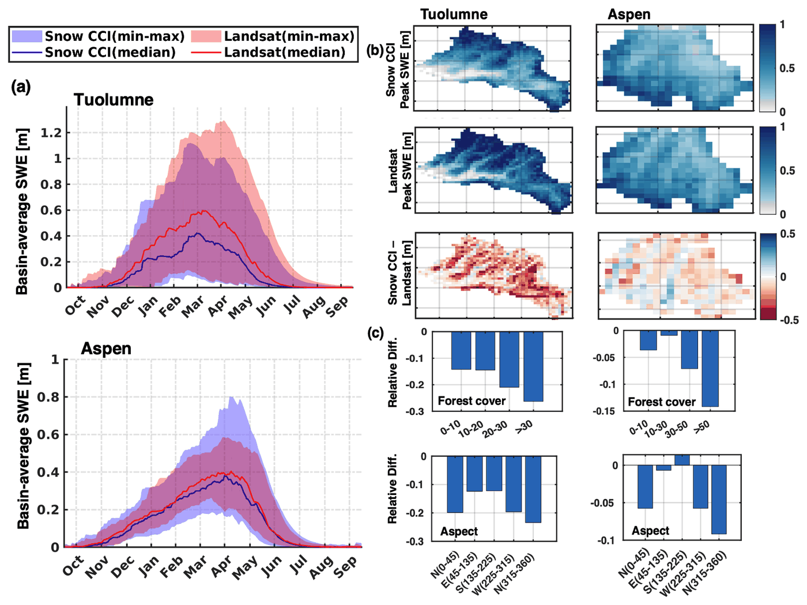
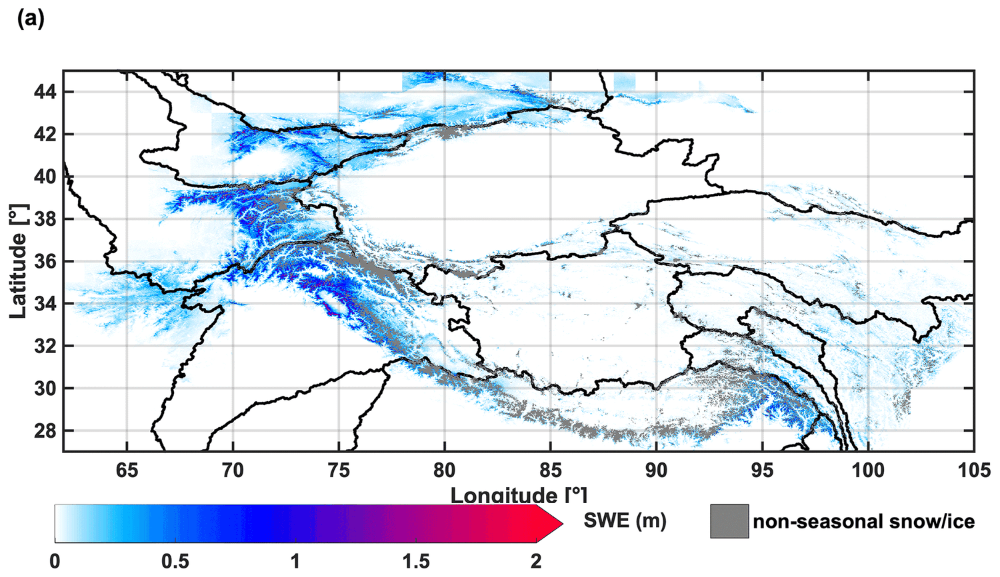
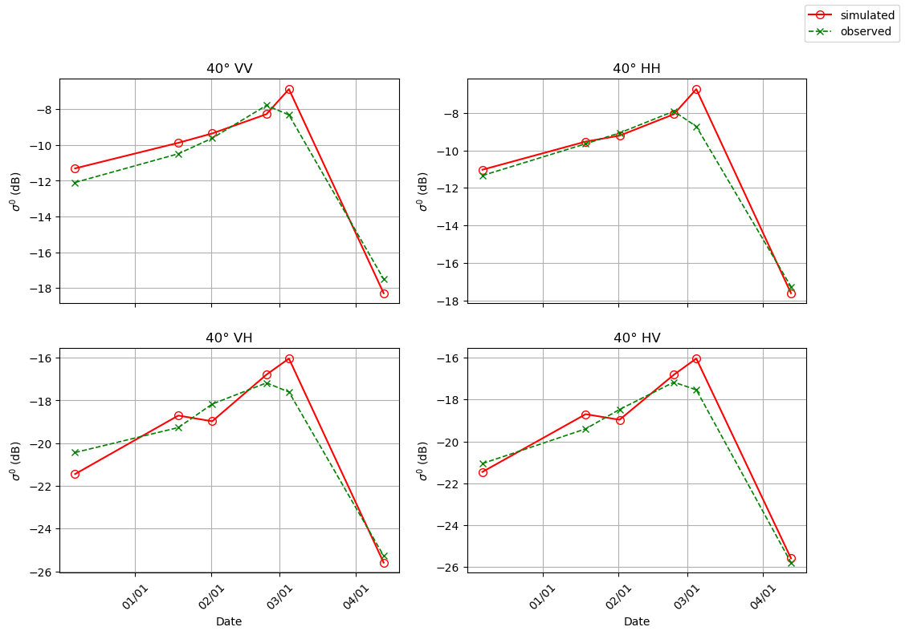
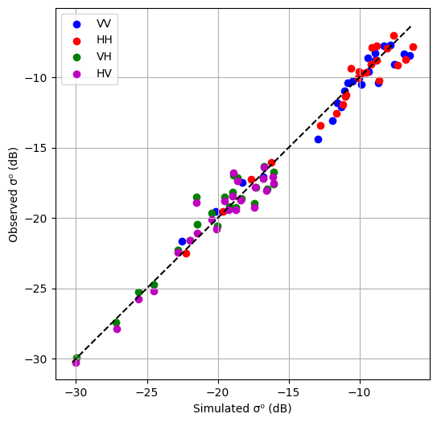

Yiwen FangZJU–UIUC Institute · Zhejiang University
Research
How much water is held in the world's mountains, and how confidently do we know it?
Two lines of work: Bayesian snow data assimilation across three mountain regions, and the software
that puts physics-based models within reach of the people who need them.
Snow data assimilation
Satellites see where snow is, not how much. During melt the rate at which a pixel sheds its cover
encodes how much water was there, so the amount is inferred rather than measured — a large prior
ensemble conditioned on satellite fractional snow-covered area.

Where the work reaches. Coastlines from Natural Earth, public domain.
Western North America and the Andes
480 m · daily · water years 1985–2021 · NASA NSIDC · 5 papers
The record itself
Daily snow water equivalent at 480 m for every water year from 1985 to 2021 — the longest
fine-resolution snow record for the region, and the reference everything below is tested
against.
Low-resolution products underestimate western U.S. peak storage by 53% — 127±54 km³
against a 269 km³ reference. In the Andes the shortfall is 34%, and MERRA2 alone misses 79%.
Agreement needs resolution finer than about 10 km; reproducing the rain shadow needs finer
than about 5 km, which only SNODAS (1 km) and UA (4 km) manage. Precipitation explains most of
the snowfall spread — R²=0.55 in the western U.S., 0.84 in the Andes — but melt processes
contribute more uncertainty than rain–snow partitioning does.
Fang, Liu, Li, Sun & Margulis, The Cryosphere17, 5175–5195
(2023). Figure 3, CC BY 4.0. doi:10.5194/tc-17-5175-2023
A second sensor can drive the same machinery — with a forest-shaped bias

ESA's Snow CCI snow-cover product is good enough to drive the reanalysis — correlations of
0.47–0.91 against in-situ peak SWE, against Landsat's 0.61–0.92.
It carries a negative peak-SWE bias of 0.03 to 0.16 m that grows with forest cover and is
worst on north-facing slopes. Only about 40% of the assimilated images meaningfully update the
posterior, and what separates a good year from a bad one is the quality of the melt-season
imagery.
Sun, Fang, Margulis, Mortimer, Mudryk & Derksen, The Cryosphere19, 2017–2036 (2025). Figure 9, CC BY 4.0.
doi:10.5194/tc-19-2017-2025
Also from this record — how few snow-depth images are enough for a continuous SWE
estimate (GRL 2019) and the same
question against synthetic truth (HESS 2023);
used downstream by others for wolverine denning habitat
(HESS 2023), snowmelt–radiation
feedback on streamflow (GRL 2023) and
California snowline projections
(Climate Dynamics 2023).
High Mountain Asia
480 m · daily · water years 1999–2017 · NASA NSIDC · 2 papers
Where the water actually sits

Peak storage averages 163 km³ across the 18 water years, ranging from 114 to 227.
Two-thirds of it sits in the northwestern basins; the southeast holds 18%, the northeast 9%.
More than half the volume lies above 3500 m, peaking between 3000 and 4000 m. The peak
typically arrives around 18 March, but in some years as early as 10 February and in others as
late as 5 May — and 1.5 K of warming moves low-elevation storage upslope rather than simply
removing it.
Eight global products put HMA peak storage at 161±102 km³, a 33% underestimate against
the reanalysis. The spread in cumulative snowfall explains more than 80% of that uncertainty,
and about half the accumulation-season snowfall is lost to ablation before the peak.
Over a billion people live downstream of this snow, and the products meant to describe it
disagree by more than the signal being studied.
Liu, Fang, Li & Margulis, Geophysical Research Letters49, e2022GL100082 (2022). No figure — the journal retains figure copyright.
doi:10.1029/2022GL100082
Altay, Xinjiang
about 150 m · daily · water years 2018–2025 · figshare · 1 under review
Finer, and a constraint that does not need the snow to be visible
The current independent line — 5 arc-second snow water equivalent over the Kelan watershed,
assimilated from Harmonized Landsat–Sentinel fractional snow-covered area, archived and open.
Optical assimilation fails where cloud or forest hides the snow. The work under review tests
multispectral unmixing and differential interferometry as constraints that do not depend on
seeing the surface, validated against the 2025 snow-season field campaigns.
Fang, Pan, Margulis, Zhou, Sun, Lei, Xiong, Wang & Tan. Submitted to
The Cryosphere. Dataset: Altay Daily Snow Reanalysis, Version 1, CC BY 4.0.
doi:10.6084/m9.figshare.33421588
NSFC Young Scientists Fund, Type C, 2027–2029, project leader · 2025 snow-season
field campaigns with the Chinese Academy of Sciences.
RSHub and LLM agents
Physics-based scattering models are accurate and almost unusable — each one a separate codebase,
its own inputs, its own conventions, its own build. RSHub puts our group's soil, vegetation and snow
microwave models on one cloud platform behind a single interface, so a researcher can ask how a
land-surface variable shows up across frequency bands without installing anything.
RSHub architecture — the client server takes a scenario description and computing
request, the job scheduler runs the wrapped scattering models on HPC, and results return through
the file and database servers.
What it supports
Snow
DMRT-TRI — dense media radiative transfer, active and passive
Soil
NMM3D-VIE-DDA — numerical Maxwell, rough-surface scattering · AIEM — advanced integral equation model
Vegetation
VPRT — vegetation polarimetric radiative transfer
Access
Web interface · Python toolbox · Jupyter notebooks · REST API
Behind it
Job scheduler on HPC, model packages wrapped to a common interface, file and database servers
The platform paper describes the architecture and model registry
(IEEE GRSM 2025), with the shared
computing framework underneath it
(IGARSS 2024). RSHub 2.0,
under review, replaces the form the user fills in with an LLM agent that plans and runs the
modelling itself.
The physics the platform serves — wet-snow electromagnetic modelling and validation
(IGARSS 2025) and SWE
retrieval coupling 1-D hydrology with passive microwave radiative transfer
(Remote Sensing 2024).
A worked case — DMRT-TRI against NoSREx
Six snowpack profiles from the NoSREx campaign, December 2010 to April 2011, run through DMRT-TRI
at 16.7 GHz and compared with tower backscatter at four incidence angles.
The whole study is about twenty lines: describe the snowpack layer by layer, submit six jobs,
collect the results. The models themselves run on the cluster.

The model tracks the season in all four polarisations, including the sharp drop in April when the
snowpack turns wet and the backscatter collapses by roughly 10 dB.

Mean RMSE 0.97 dB across the four polarisations — VV 0.90, HH 0.89, VH 1.06, HV 1.03,
24 points each.
Snow-validation-DMRT-TRI-active.ipynb ↗ — the run above; it also needs the NoSREx snowpack profiles and tower observations, which are not ours to redistribute